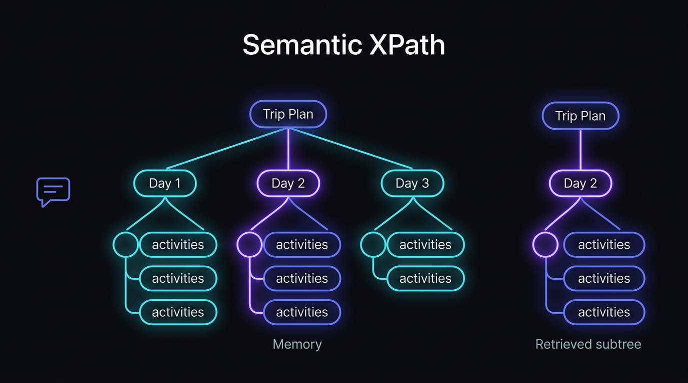
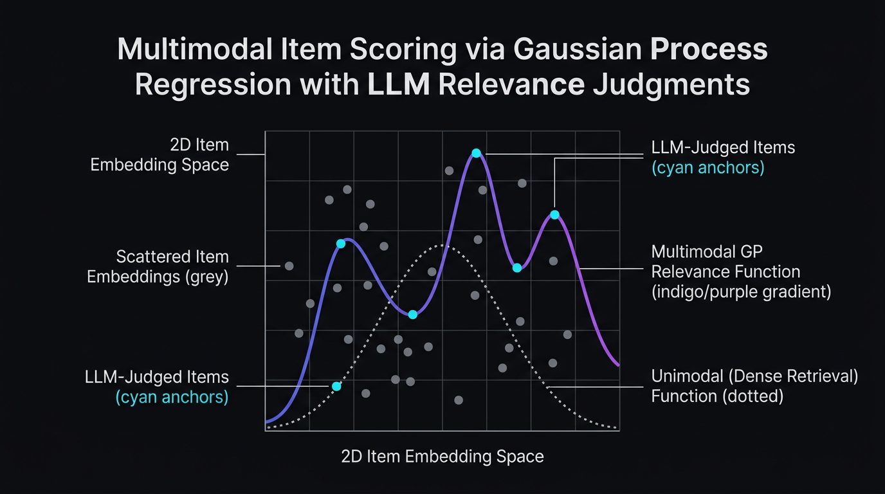
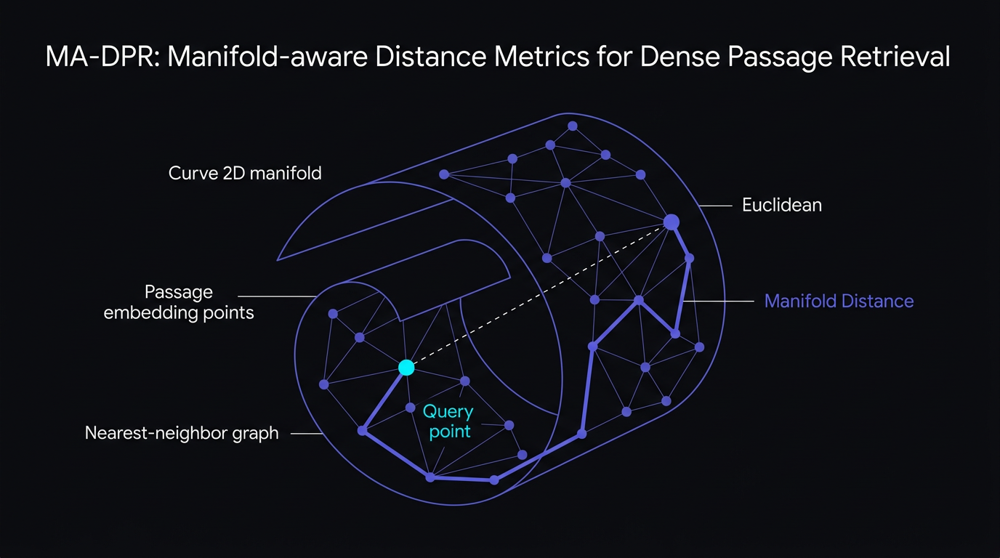
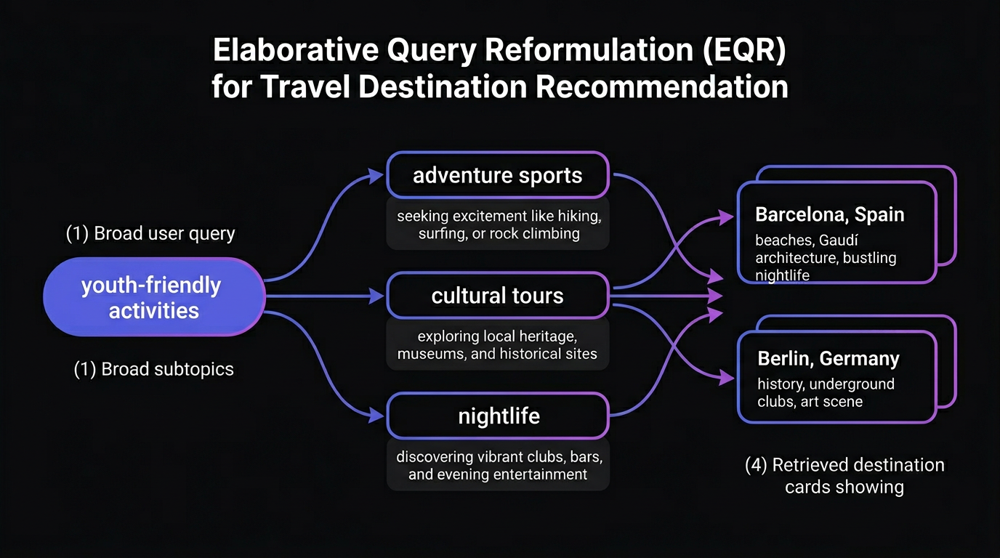
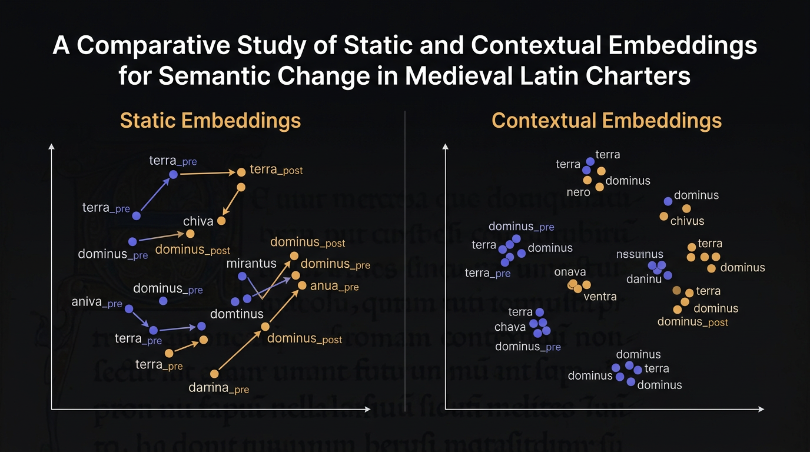

Ph.D. Student · D3M Lab · University of Toronto
I am a first-year Ph.D. student in the Department of Mechanical & Industrial Engineering at the University of Toronto, advised by Dr. Scott Sanner. I completed my undergraduate studies in Computer Science and Economics at the University of Toronto. My research lies at the intersection of LLM agents and Information Retrieval, with a current focus on building robust, long-lived autonomous agents through structured memory.




